Camps Nature Environnement
Prévisions des massifs
Accès aux massifs forestiers aujourd'hui et demain, selon les préfectures.
Chargement des camps…

Nature EnvironnementCamps Nature Environnement
Accès aux massifs forestiers aujourd'hui et demain, selon les préfectures.
Chargement des camps…